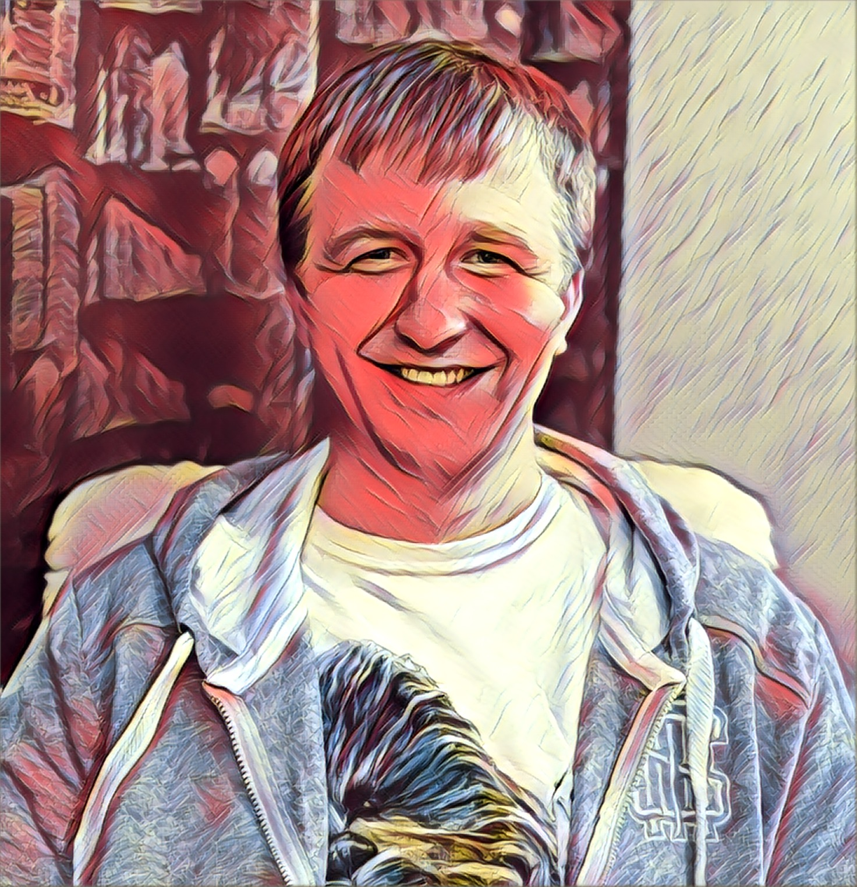

Привет, я Клим Junior Front-end разработчик, верстальщик HTML5, CSS3

Занимаюсь изучением языков HTML5, CSS3, JavaScript c 2019г. Использую такие платформы как Youtube, HtmlAcademy, learn.javascript, codewars. Эта профессия мне очень близка, в ней я вижу будущее и не только свое.
Ключевые навыки:
- HTML5
- CSS3
- JavaScript
- Английский — B1 — Pre-Intermediate
Образование:
- 2007 - Дальневосточное мореходное училище: техник-механик по обслуживанию судовых дизелей
- 2025 - Российская академия народного хозяйства и государственной службы при Президенте РФ (РАНХиГС) заочно: правовое обеспечение национальной безопасности
Места предыдущей работы:
- 2021 – н.в. «Major-Auto» в должности мастера-приемщика
- 2017 – 2021 г. ООО «ТракМастер42» в должности автомеханика
- 2010 – 2017 г. АО «МЭЗОПЛАСТ» Бригадир слесарного участка
Личные качества: Коммуникабельность, аналитический склад ума, креативность, внимательность к мелочам, умение работать в команде, обязательность и ответственность, стремление к освоению новых навыков и технологий.
Мой статус
If you fall asleep now, you will dream. If you study now, you will live your dream